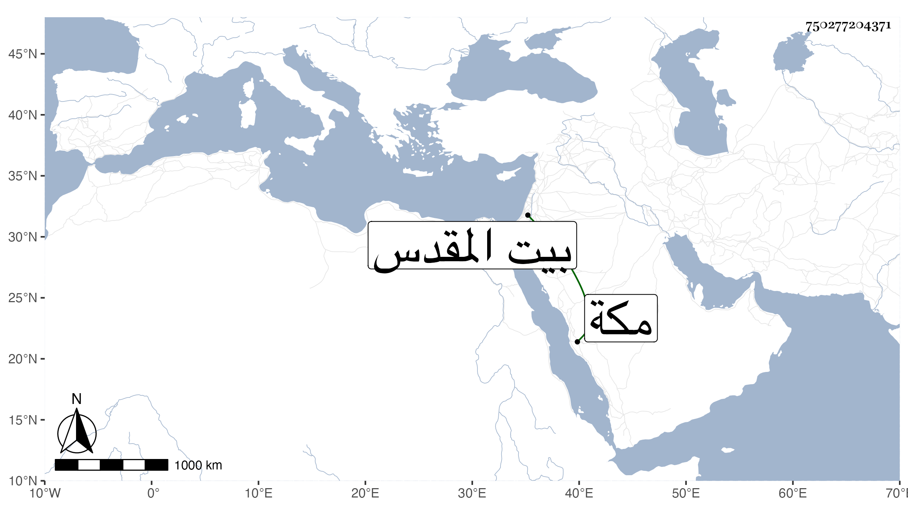

0902Sakhawi.DawLamic.ITO20230111-ara1.EIS1600.750277204371
Biography ID: 750277204371
188
خديجة ابنة الجمالي يوسف بن عبد الكريم بن كاتب جكم شقيقة الكمالي ناظر الجيش وأخيه الشهاب أحمد وهي أسن الثلاثة تزوجها بعد موت أبيها خير بك الظاهري خشقدم وحجت معه في سنة سبعين واستمرت تحته إلى انقضاء أيامه وكانت معه بمكة ثم توجهوا بها اليه بالقدس حتى مات فيه ثم تزوجها شاهين مملوك أبيها وفارقها بعد أن إستولدها كالأول عدة ماتوا ويقال أنه تزوجها بينهما كاتب السر ابن مزهر أياما . واستمرت أيما حتى ماتت بعد تعلل بأمراض باطنية في يوم الأحد مستهل شعبان سنة اثنتين وتسعين وصلى عليها من الغد بباب النصر في مشهد حافل ودفنت بتربة أبيها . ويقال إنها كانت قارئة كاتبة خيرة واستكتبت الصحيح وكانت تقرأ على الفخر عثمان الديمي عفا الله عنها وعوضها الجنة .
